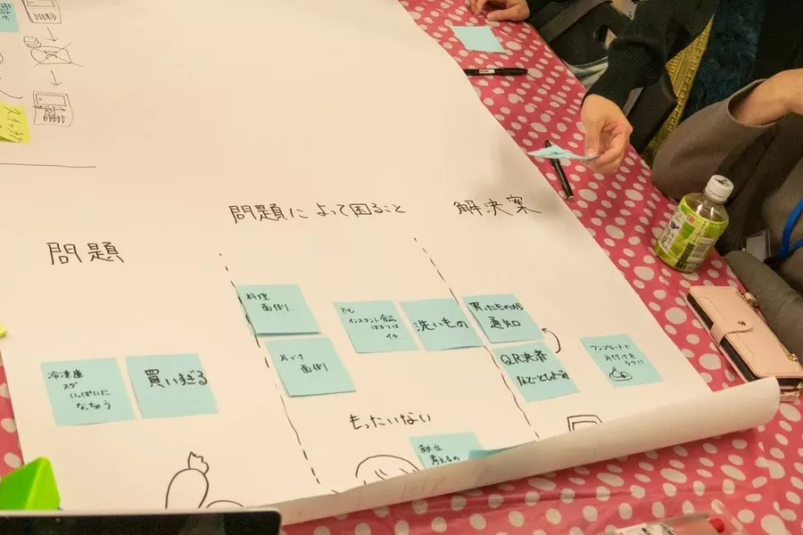

雑談から広がって、まず鎌倉市にゴミ箱ない問題にフォーカスしました。改札に入ってもないらしいです。（笑）
そこからうまい具合に本来の悩みにお話を移しました。
浅井さんの悩みは、１人暮らしで毎日インスタント料理は健康的な観点で不安だけどつくるのは手間というものでした。
市場で安いときに買いすぎてしまったり、冷蔵庫の管理ができないという本人としての反省も見えました。
解決案としては、買ったものからグループ化して簡単な料理を提案してくれるアプリが出た。

まこさんの悩みは足のサイズが左右で違い、靴連れを起こすことだった。
市販の靴は同じサイズで揃えられていてカスタムが難しい。
まこさんのように足のサイズが左右で微妙に違う人にとっては厳しい．．．
解決案としては、TPUを使って柔らかく足にやさしい中敷きをつくるというものが出た。
鎌倉を食べ歩きしてごみ箱のなさを痛感しました（笑）
海鮮とお肉とお酒おいしかったです！！